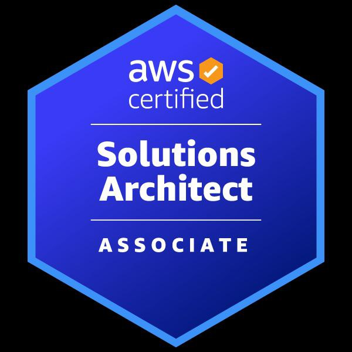
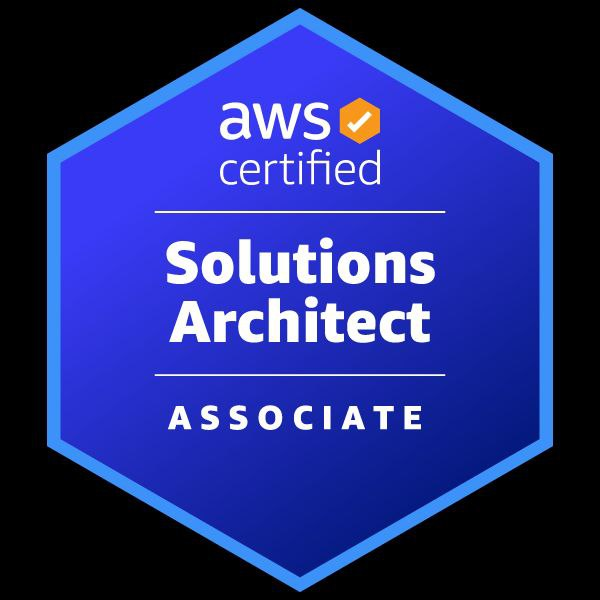

Rajesh HV
AWS | DevOps | iOS Dev
- Certified AWS Solution Architect and experienced DevOps Engineer with a strong background in software engineering and a passion for cloud technologies, and architecture design.
Skills
AWS
Jenkins
Docker
Terraform
git
Linux
Python
Google Speech-to-Text
iOS Development
Swift
GCP
Xcode
Certifications




Work experience
- Designed and implemented highly scalable and robust 3-tier architecture for a cloud- based application using Amazon Web Services (AWS). Utilized EC2 for web and application servers, RDS for relational databases, and S3 for object storage.
- Developed and maintained automated CI/CD pipelines for code deployment using Jenkins.
- Hands-On Experience in creating Continuous Delivery Pipeline which will automatically deploy application in AWS Elastic Beanstalk whenever source code is updated.
- Experience in Terraform for infrastructure as code (IaC). Designed and implemented 3-tier architecture for a cloud-based application, utilizing AWS.
- Implemented automatic scaling of EC2 instances based on CloudWatch metrics, ensuring cost-effective resource utilization.
- Performed technical designs and implementation of 2 complex iOS apps.
- Collaborated with the scrum team of 11 to translate client requirements into implementable user stories.
- Experience in building Acute Care Telemedicine apps.
- Worked with quality assurance team to confirm app compatibility with analogous solutions on iOS platforms.
Indium Software
DevOps Engineer | iOS Dev | 2021-2022
Projects
- Trained integrated system for recognizing 1000 medical words in an iOS app
- IgniteMinds Home:
- Experienced iOS developer with expertise in setting up and managing CI/CD pipelines using Jenkins and Xcode
- Proficient in automating the release of iOS builds to TestFlight using Jenkins, including managing code signing and provisioning profiles.
- Access to HR Department related updates:
- HR policy viewing
- Voice of Indium
- Document viewing (Brand Stationary)
- Attend various training programs organized by the organization
- Raise Tickets for any issues in IgniteMinds
- Profile displaying employee details
- To know about the fellow Indiumites. Enter the keywords and find the Indiumites profile
- Hosted on AWS S3
- Code versioned on my github
- Automatic deployment by AWS CodePipeline
- 2022 - Omnicure Now
- 2021 - IgniteMinds
- Cloud-Resume